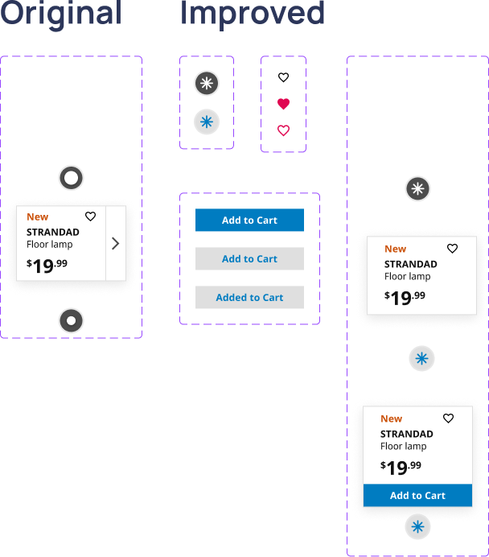
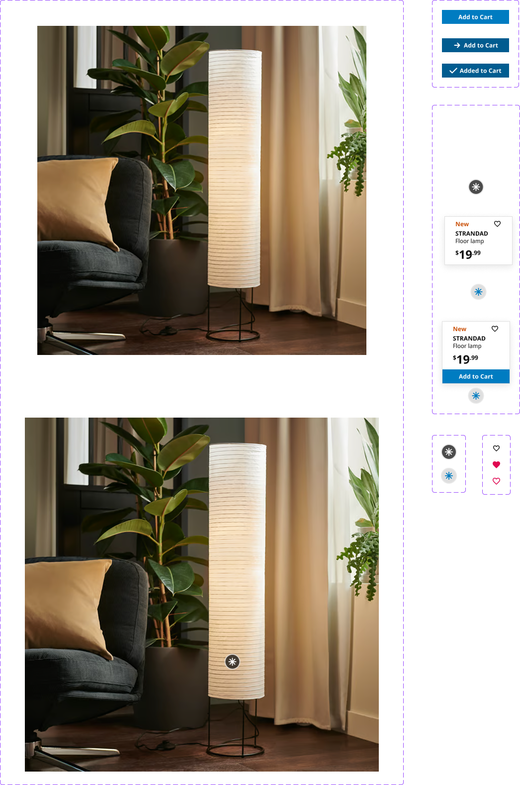

Overview
Small interactions often define how an interface feels. This project focuses on redesigning an IKEA-inspired product card to enhance user experience through intentional micro-interactions and motion design. By analyzing and rebuilding existing behaviors, the final prototype introduces refined hover states, animated feedback, and persistent interaction modes that guide users through browsing, favoriting, and adding products to their cart—resulting in a cohesive, responsive, and satisfying final build.
Context
Recently after living off campus, I had to get furniture for my new apartment, which brought me to IKEA’s website.
As I was browsing through the website, I was drawn to IKEA's clean and modern layouts, but saw an opportunity to
introduce more microinteractions to their current ones.
Over the course of 11 weeks, the opportunity came to do so for a class project. The objective was for us to take
existing microinteractions from the website, recreate it and improve it by adding our own ideas. (But with code…)
Background
In order to do so, we started to learn how to interpret the interactions we see on the screen by breaking them down
to the triggers, rules, feedback, and loops & modes for each object I interacted with. (Very important to document this accurate)
To help we had 3 checkpoints, just to get the hang of it and increase the amount of objects to build microinteractions for.
From 1 → 3 → 5 (for our final build)
Challenges
While browsing the website, I stumbled upon a microinteraction that felt unique to a furniture site. There was a circle icon
on top of an image of a lamp, but when I hovered over the icon, a product card popped up creating an ah-ha moment.
When I clicked on it, it would bring me to the actual product page. But I thought, if there was already a pop-up,
there's an opportunity to add more functionality to what I was seeing.
The challenge began with understanding how to interpret what we saw into code, using HTML, CSS, and Javascript.
Also, improving the interactions into something that felt more intuitive for the user.
Process & Insight
Alpha
For the first step, we were allowed to choose any object we liked from a website of our choice.
Initially I chose a different microinteraction from the website, being drawn into the smooth zoom in feature
(with the feeling that I would definitely use this interaction for a project on my own).
For this checkpoint, it was crucial that we replicated what we saw, but also documented exactly what it was doing.
Here is it on its own:

Beta
Starting off with a simplified version (while looking towards my final version), I decided to code the pop-up interaction
and added some fun interactions on my own.
The three objects that I decided to change/add:
Asterisk Symbol Button
Initially, I wasn't too drawn into the original circular icon and didn't feel compelled to interact with it.
I replaced it with an asterisk (*) symbol to better communicate discovery and invite exploration.
Heart Icon
This interaction was added to allow users to favorite the product without navigating away from the product
page, creating a more efficient and expressive browsing experience.
Add to Cart Button
The Add to Cart button was introduced as a secondary action that becomes available after engaging with the
product card, reducing visual clutter while still supporting quick purchasing.
Since I was making changes to what I saw on the screen, I didn't have an exact visual reference to explain how I wanted my animation to look like.
So I went to Figma to design and prototype the animation I wanted it to be.
After confirming and adjusting any issues, I started to code it on VSCode!
Here's what I made:
The Process:

The Results:

Challenges
'Add to Cart' button was a 'Mode'
Intentionally, I wanted the Add to cart button to appear after users hovered over the product cart.
However, this was definitely the hardest part to interpret and code with many different interpretations on how it should be laid out.
However, after the crit for my Beta Description, I received feedback that certain objects should stay static
(originally, my product card would move 'up' at its hover state to make way for the 'Add-to-cart' button).
I changed it such that the pop-up card would stay in its place and simply factor in how much space the 'Add-to-cart' button would take
(in the end, was definitely the easier route).
Solution
For my final version, I wanted to take it a step further by adding two additional objects that introduce
more layered microinteractions.
Background Product Image
Inspired by the zoom effect I recreated in my Alpha, I carried this interaction into the final version
to maintain the same sense of depth and engagement when hovering over the product.
Add to Cart Button
The arrow entering from the left of the text was inspired by hover interactions commonly seen on IKEA’s
website, helping maintain visual consistency with the original interface. Upon clicking, the button
provides clear feedback by changing the text to “Added to Cart” and transforming the arrow into a
checkmark to confirm a successful action.
Once again taking it to Figma to help me visualize. Here is an example of my recreation on Figma:
The Process:

The Results:

Challenge
Centering the items inside of the button
In order to make sure that the interaction was picture perfect, I had the most trouble in making sure that at all stages
(not hovered, hovered, and clicked) that all the items (the text and icons) were to remain centered always on the screen.
Results
In the end, I created a microinteraction with 5 total objects at hand to create the most holistic experience.
Here's the end result (you can interact with it as well!)
Click here to see the full documentation:
Final Build